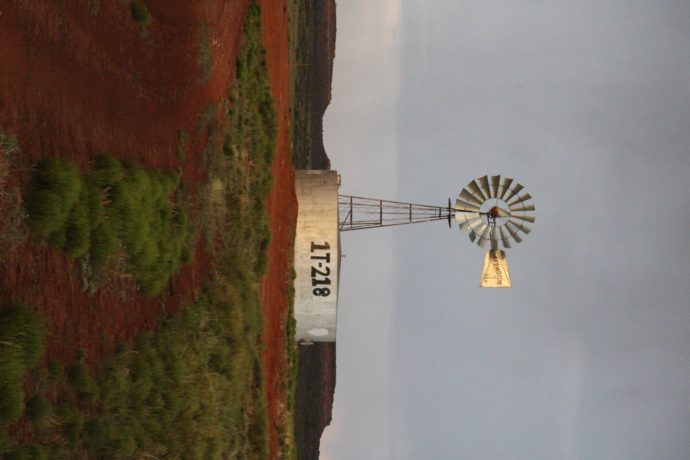
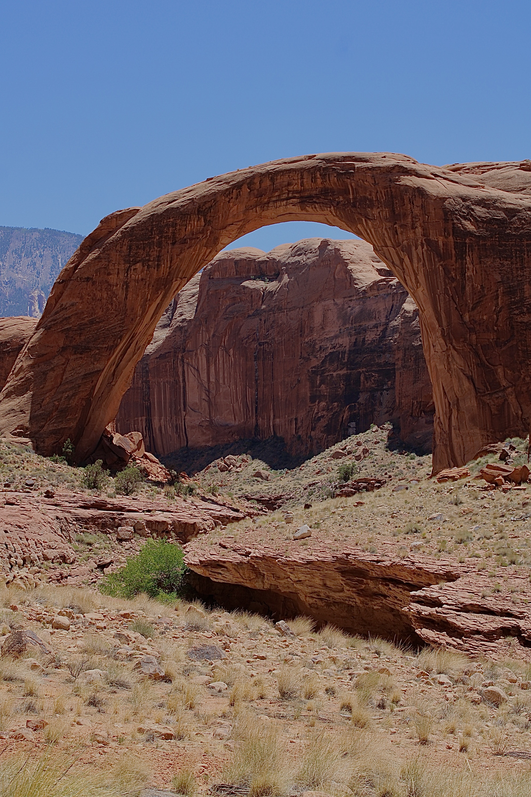

Focused on the needs that matter most

Running Water
Having grown up hauling water, she understands firsthand the challenges many Navajo families continue to face and the true value of every drop. This experience has shaped her deep respect for water as a vital resource because water is life. She is committed to securing reliable, sustainable water access for every Navajo family and community by advocating for infrastructure improvements, responsible resource management, and long-term solutions. Ensuring access to clean water is essential to strengthening public health, supporting daily life, and building a more resilient and thriving Navajo Nation.

Protecting the Land
Committed to protecting endangered and medicinal plants while preserving the traditional knowledge passed down through generations. Dedicated to defending our lands, grazing rights, and natural resources to sustain the future of traditional livelihoods. By working closely with grazing officials and local communities, she ensures that their voices are heard and that our land is responsibly cared for. Protecting these foundations honors our roots and strengthens the beauty, resilience, and future of the Navajo Nation.

Youth and Education
Honored to deliver the opening remarks for the STEM building at Diné College, recognizing the elders and ancestors whose vision made this milestone possible. Deeply committed to supporting youth through scholarships, increased college funding, mentorship, and expanded access to STEM internships and opportunities. As a parent of two college students, she understands firsthand the importance of accessible education and is dedicated to advocating for greater scholarship resources, meaningful career pathways, and a stronger future that empowers our students and fosters growth across our communities.

Healthcare
She had the privilege of representing Tuba City Regional Health Care Corporation in Region 9 tribal consultations, advocating for improved healthcare services, increased funding, and a higher OMB rate to better support the service area. Through this work, she has demonstrated a strong commitment to advancing policies that strengthen healthcare systems across the Navajo Nation. She continues to advocate for fully funded, accessible, and dependable healthcare for families, elders, and veterans, ensuring that every community receives the quality care it deserves.

Veterans and Families
A proud daughter of Vietnam Veteran, the late Lee F. Johnson Sr., she is deeply committed to honoring those who have served. She advocates for increased funding and expanded access to essential services for veterans and their families. Through strengthening support systems in housing, transportation, and healthcare, she is dedicated to ensuring that veterans receive the respect, care, and resources they deserve.

Protecting Livestock
Livestock is a vital part of the livelihood, culture, and economy of the Navajo Nation. Updating and strengthening laws to better protect livestock is essential to sustaining ranching communities. By advocating for improved water access, responsible land use, and stronger local support systems, we can ensure that ranching families are protected and empowered. Preserving livestock resources not only supports economic stability but also honors the traditions and way of life of our people.

Housing
Access to safe, quality housing is essential to improving overall quality of life. Strengthening and modernizing Navajo Housing Authority criteria is critical to ensuring families can access the housing they need. By advocating for new development, home rehabilitation, and reliable access to basic utilities, we can expand essential housing services across the Navajo Nation. Every community deserves stable, affordable homes that promote dignity, security, and opportunity for future generations.

Tourism
I support the growth and sustainability of tourism and local businesses by ensuring their voices are heard and their needs are addressed. I am committed to strengthening partnerships between business owners, community members, chapter leadership, and the Navajo Nation Council to promote collaboration, economic development, and long-term success.

Roads and Transportation
Safe and reliable roads are essential for families, students, elders, emergency services, and local businesses. Kimberlee is committed to advocating for improved road maintenance, better transportation access, and stronger partnerships with chapters and agencies to address the road needs of our communities.


Follow the campaign